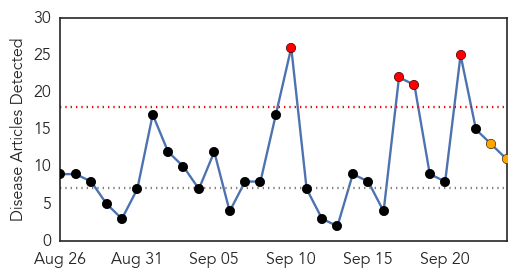
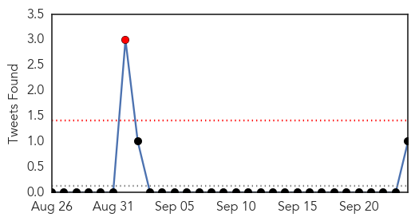

30 Day Trends
Web: 4 alerts, 2 warnings
Twitter: 1 alerts, 0 warnings
Top Articles:
- 0.998
- IDPH urges public to get flu vaccinations
- 0.992
- Flu vaccine will be better than last year, CDC says
- 0.990
- Local health care providers prepare for flu season
- 0.965
- Flu Season Right Around the Corner
- 0.901
- Rapidly assessing the next influenza pandemic
- 0.897
- Health Department to Host Community-Wide Influenza Vaccine Clinic Sept. 28-29
- 0.838
- NanoBio's Genital Herpes Vaccine Demonstrates Efficacy In Guinea Pigs As Both A Prophylactic And A Therapeutic Vaccine
- 0.793
- Flu vaccine promises to be far more effective this year
- 0.733
- Flu shot clinic set for Oct. 6
- 0.565
- Balanced Coverage: Flu vaccination legislation
- 0.541
- USDA plan to suffocate chickens infected with avian flu would "cook them alive"
Top Tweets:
- 0.657
- Recommended composition of influenza virus vaccines for use in the 2016 southern hemisphere influenza season http://t.co/dpOxIBXptn
- 0.636
- Deciding on influenza vaccines composition in Sept. gives manufacturers sufficient time to have doses of vax ready before the flu season
Web/News Articles
Tweets
Article Locations

Article Confidences